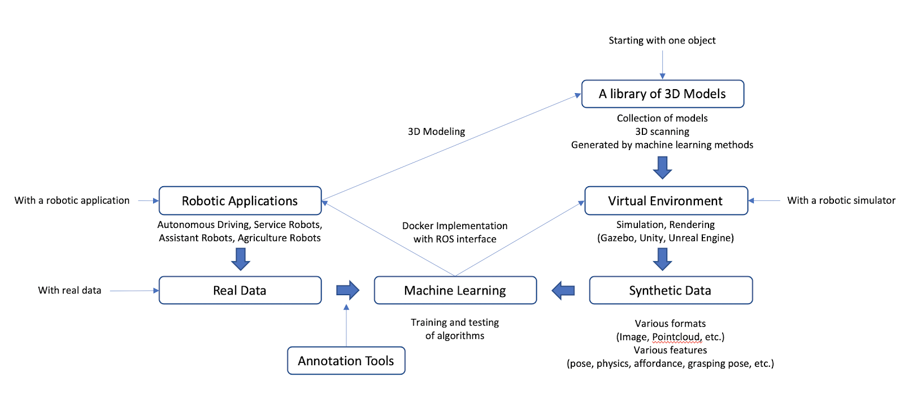

What do we provide?
- Data Type: We provide different raw 3D data sets (3D models, 3D point cloud, 3D synthetic data)
- Data Label:Prelabeled machine learning/ AI ready data sets (3D object pose, 3D grasp pose, 3D bounding box, 3D instance segmentation)
- Annotation tool kits: AI assistant 3D annotation, human in the loop tool, VR+AR annotation
- Application oriented Algorithm: pretrained machine learning algorithm (robot grasp and manipulation, VR/AR, autonomous driving, computer vision)
- ROS API for robotic application: connect with your robotic solutions at run time
FlowChart
Our Advantages
- A library of 3D models
- Synthetic Data Geneartion
- Annotation tools for 3D data
- 3D data processing algorithms for pose estimation,grasping pose generation,etc.
- ROS API for robotics applications
We target at the processing and generating of 3D data and how to take advantage of them to train and test 3D related machine learning algorithms. We also provide ROS APIs for users to easily use the algorithms in their applications in either real field or virtual environment. These algorithms embody techniques of object detection, pose detection, 3D reconstruction, etc., which would be useful in many applications.
Users can utilize our platform with their own data either from their own applications or from online sources. If the users lack data or want to benefit from synthetic data, we provide the tool for generating the data with 3D models. For the 3D models, we provide a collection of them. If the users want to generate synthetic data specific to their applications, we provide methods for them to create the 3D models using 3D scanning techniques. Users can play with the simulation environment and generate the specific data they need by tuning the simulation setting.
Our Datasets

Our amazing team
Our group of passionate and dedicated people love using our collective experience to solve problems and impact the future of AI applications and robotics. Our specialties include AI assisted annotation, high-accuracy real-world data collection, creating machine learning algorithms, mixed reality interface control (VR/AR), and connecting it all together with robots. This site is open to the public, and we want to encourage more and more people to contribute to our robotic society.
YongMing Qin
Machine Learning Engineer
PhD student at the University of Virginia with expertise in Robotics, Machine Learning and Control Theory.
Tirth Doshi
Software Engineer
Tirth Doshi is a software engineer with great expertise in algorithm design, analysis and optimization.
Ruobing Yu
Team Lead
Robotics is my passion - I believe that this field will fundamentally change the world in a way nothing ever has. I spend every possible minute understanding what my clients need, finding the rights teams to make sure that their projects succeed, and continuously learning. Despite the way that robots are featured in the media, we are in the early days, but right at the tipping point. The equivalent of 1997 for the Internet. Exactly like then, getting amazing things done is about getting world class thinkers and doers together and aligned on a common vision. It is just now becoming possible to capture multidimensional sensor data at a truly useful speed and level of granularity to apply directly to physical platforms outside of laboratory conditions. Battery, motor, and processor technology has made things possible. The rapid evolution of sensors and control algorithms is making things actually happen. My focus is using the latter to help clients achieve the best possible outcomes for their applications..
.jpg)